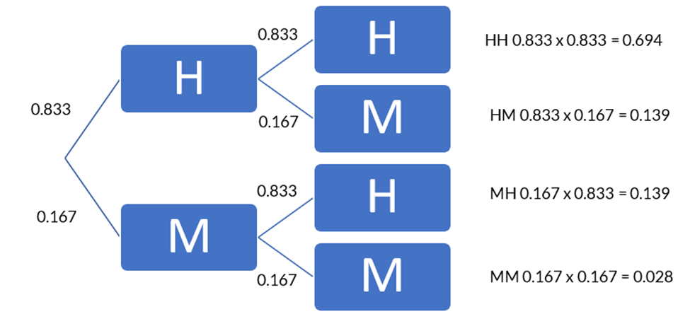
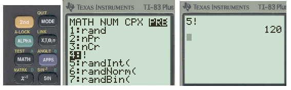
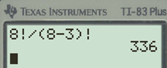
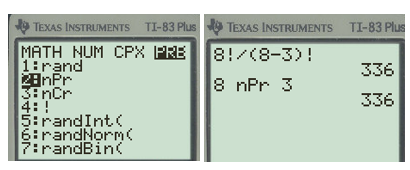
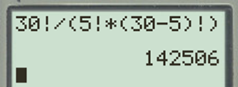
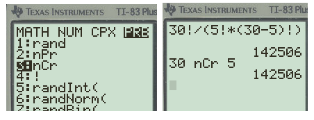

Determine the probability using "given" statements.
Distinguish between permutations and combinations.
Subsection4.3.1Independent Events
Previously we found probabilities for compound events when one event was chosen. Now we will expand these concepts for when multiple events take place. We can still use a tree diagram to find all possible outcomes, but using some of the probability rules will simplify the process.
Two events A and B are independent events if the fact that A occurs does not affect the probability of B occurring. When flipping two coins, what happens on the first coin toss does not impact what happens on the second coin toss. Same with rolling multiple dice. Each dice roll is independent of the others.
When two events are independent, the probability of both occurring is
\begin{equation*}
P(\text{A and B}) = P(A) \times P(B)
\end{equation*}
For example, if a four-sided die is rolled and then a quarter is flipped. What’s the probability of rolling a four then flipping a head? Since what happens on the dice does not affect the quarter, the events are independent so we can multiply each event together. The chance of rolling a four is ¼ since there are four sides, and getting a head is ½ on the coin, the probability that both occur is \(P(\text{4 and H}) = 1/4 \times 1/2 = 1/8 \)
If we used a tree diagram, we would list the four outcomes for the die and add two branches to each die value to represent heads or tails. Since each outcome is equally likely on the dice and the coin, the probability for each event is 1/8.
Practice Problems
Checkpoint4.3.1.
A card is drawn from a standard deck of 52 cards and is replaced, then a second card is drawn. Find the probability of drawing a queen and then an king.
Solution.
The probability of getting a queen is 4/52 on the first draw, the card is replaced so the probability of drawing a king is 4/52 on the second draw. Thus the probability P(Q and K) = 4/52 x 4/52 = 16/2704 = 0.0059
Checkpoint4.3.2.
A Harris poll found that 46% of Americans say they suffer great stress at least once a week. If three people are selected at random, find the probability that all three they suffer great stress at least one a week.
Solution.
We will assume each person is independent so the probability is 0.46 for each person, thus \(P(SSS)= 0.46 \times 0.46 \times 0.46 = 0.0097 \)
Checkpoint4.3.3.
Approximately 9% of men have a type of color blindness that prevents them from distinguishing between red and green. If three men are selected at random, find the probability that all three will have this type of red-green color blindness.
Solution.
We will assume each person is independent so the probability is 0.08 for each person, thus \(P(SSS)= 0.08 \times \ 0.08 \times 0.08 = .000512 \)
Checkpoint4.3.4.
A bag contains 3 red marbles, 2 blue marbles, and 5 green marbles. A marble is selected at random, its color is noted, and then returned to the bag. A second ball is randomly selected and its color noted. Find the following probabilities.
Selecting two red marbles in a row.
Selecting a blue marble and then a green marble.
Solution1.
Since the marbles are replaced we are looking at independent events, so the probability stays the same after each draw. \(P(\text{red and red}) = 3/10 \times 3/10 = 9/100 = 0.09 \) or 9%
Solution2.
Since the marbles are replaced we are looking at independent events, so the probability of each color stays the same after each draw.\(P(\text{blue and green}) = 2/10 \times 5/10 = 10/100 = 0.10 \) or 10%
Other times the events are not equally likely. We can still use a tree diagram to find the outcomes, but we multiply the probability of each event along the tree to find the new probability outcomes.
During the 2022-23 NBA season, Jamal Murray of the Denver Nuggets had a free throw shooting percentage of 0.833. Assume that the probability Jamal Murray makes any given free throw is fixed at 0.833, and that free throws are independent of each other. Construct a tree diagram to help determine the probability of each event.
For each shot, Jamal will hit the basket to make the free throw or he will miss the shot. We will use H to represent he hit the basket and M for miss the basket. For his first shot, he either Hit or Miss, thus two branches. Off each branch he has two more lines to represent the Hit or Miss for the second shot. We still have the same four outcomes for two coin tosses, but the probabilities are not the same.
Since each Hit has a probability of 0.833, then each miss is the complement \(1-0.833 = 0.167\text{.}\) We list this probabilities along the tree. Then we multiply along each branch for the probabilities for each outcome.

Figure4.3.5.Tree diagram of two shots
Now use the tree diagram to answer the following questions about the outcomes when Jamal Murray shoots two free throws.
Example: What is the probability that he will make both shots?
Solution: we want Hit and Hit, thus P(HH) = 0.833 x 0.833 = 0.694
Example4.3.6.
What is the probability that he will miss both shots?
Solution.
We want Miss and Miss, thus P(MM) = 0.167 x 0.167 = 0.028
Example4.3.7.
What is the probability that he will make exactly one free throw?
Solution.
we want any outcome that has only one hit, so we will add each Hit outcome. Thus, P(HM) + P(MH) =0.139 + 0.139 = 0.278
Example4.3.8.
What is the probability that he will make at least one free throw?
Solution.
we want any outcome that is a hit, so we will add each outcome with a hit together. Thus, P(HH) +P(HM) + P(MH) = 0.694 + 0.139 + 0.139 = 0.972
Alternatively, we can use the complement of missing both shots. Thus 1-P(MM) = 1- 0.028 = 0.972
Subsection4.3.2Dependent Events
Not all probabilistic events are independent. Sometimes the subsequent events depend on what has happened previously. If you think of a bag full of colored marbles. If you pull a marble out and do not replace it, the probability of drawing the same color on the next draw depends on what was removed. The probability of every event has now changed based on what has already happened.
A dependent event is when the outcome of the second event is dependent upon the outcome of the first event. The probability of what will occur on the second event is based off what occurs on the first event.
When two events are dependent, the probability of both occurring is
\begin{equation*}
P(\text{A and B}) = P(A) \times P(B|A)
\end{equation*}
The formula reads as the product of the probability of event A times the probability of B occurring, given that A has already happened. This makes better sense with an example.
Three cards are drawn from a deck of 52 cards and not replaced. Find each probability of each event.
Example: Getting three Aces in a row.
Solutions: On the first draw there is 4/52 chance of getting an Ace. You have an ace in your hand thus the probability that the next card is an Ace is 3/51 since only 3 aces remain and 51 cards left in the deck. Now you have two aces in your hand, so the probability that the next is also is an ace is 2/50 since two aces remain and 50 cards are left in the deck. Now we multiply these event together.
On the first draw there is 4/52 chance of getting an Ace. You have an ace in your hand thus the probability that the next card is an Ace is 3/51 since only 3 aces remain and 51 cards left in the deck. Now you have two aces in your hand, so the probability that the next is also is an ace is 2/50 since two aces remain and 50 cards are left in the deck. Now we multiply these event together.
The chances that the first draw is a Jack is 4/52, you have a Jack in your hand so the chances that the next card drawn is a Queen is 4/51 cards that remain, then the chance the next card is a king is 4/50. Thus \(P(JQK) = 4/52 x 4/51 x 4/50 = 64/132600=0.00048\)
Example4.3.11.
Drawing three spades in a row?
Solution.
There are 13 spades in the deck, so the first draw has 13/52 chance, the second draw ahs 12/51 chance, and the third draw is 11/20. Thus P(SSS) =13/52 x 12/51 x 11/50 = 1716/132600 =.0129
Practice Problems
Checkpoint4.3.12.
A bag contains 3 red marbles, 2 blue marbles, and 5 green marbles. A marble is selected at random and given away as a prize. Then a second ball is randomly selected to be given away as a prize. Find the following probabilities.
Selecting two red marbles in a row.
Solution.
Since the marbles are not replaced in the bag we are looking at dependent events, so the probability change after each draw. \(P(\text{red and red}) = 3/10 \times 2/9 = 6/90 = .067 \)
Checkpoint4.3.13.
A bag contains 3 red marbles, 2 blue marbles, and 5 green marbles. A marble is selected at random and given away as a prize. Then a second ball is randomly selected to be given away as a prize. Find the following probabilities.
Selecting a blue marble and then a green marble.
Solution.
We will assume all the marbles are in the bag to begin with. Since the marbles are not replaced to the bag, we are looking at dependent events, so the probability will change after each draw. \(P(\text{blue and green}) = 2/10 \times 5/9 = 10/90 = 0.111 or 11.1% \)
Subsection4.3.3Conditional Events
Conditional probability of an event B in relationship to an event A is defined as the probability that event B occurs after event A has already occurred. It’s the quotient of the events. P(B|A) = P(A and B) ÷ P(A)
The probability that Sam parks in a no-parking zone and gets a parking ticket is 6%, The probability that Sam cannot find a legal parking space thus parks in the no-parking zone is 20%. What’s the probability Sam will get a ticket given that he parks in a no-parking zone?
Solution: P(ticket and No-parking zone) = 0.06 and the P(no parking zone) = 0.20, therefore the probability that Sam gets a ticket given he parks in a no-parking zone is
A box contains some white tennis balls and some yellow tennis balls. A person selects two tennis balls without replacement to practice serves. If the probability of selecting a white tennis ball and a yellow ball is 30% and the probability if selecting a white tennis all on the first draw is 40, find the probability of selecting a yellow tennis ball on the second draw given that the first ball was yellow.
Solution.
This is conditional probability. We are told that P(white and yellow) = .30 and P(white)=0.40. We need to find P(yellow|white) = P(white and yellow) divide by P(white) = 0.30/0.40 = 0.75 or 75%.
Subsection4.3.4Permutations and Combinations
There are times when the sample space or event space are very large, that it is not feasible to write it out. In that case, it helps to have mathematical tools for counting the size of the sample space and event space. These tools are known as counting techniques.
Counting Principle: If Task 1 can be performed in m ways, and Task 2 can be performed in n ways no matter how task 1 turns out, then the sequence task 1 and task 2 can be performed in m·n ways together (as a product).
Suppose a menu offers a choice from 2 salads, 6 main dishes, and 3 desserts options. How many different meals consisting of one salad, one main dish, and one dessert are possible?
Solution:There are three tasks to this meal, picking a salad, a main dish, and a dessert. The salad has 2 choices, the main dish has 6 choices, and the dessert has 3 options. Therefore there are \(2×6×3=36\) different meals.
If we did this with a tree diagram, we would have 2 lines to represent the two salads, then each salad would have the 6 main dishes branched from it, then each of those branches would have the 3 desserts. If you list each unique outcome, there are 36 different meals.
Checkpoint4.3.15.Password.
How many three letter passwords can be made from the letters a, b, and c , if the letters can be reused?
Solution.
3x3x3 = 27 passwords
Checkpoint4.3.16.Kentucky Derby.
Eight horses that were in the 2024 Kentucky Derby were named: Dornoch, Sierra Leone, Mystik Dan, Catching Freedom, Forever Young, Just Steel, Honor Marie, and Stronghold. In how many ways can the first three finishers turn out from this list of eight horses?
Solution.
We just need to fill three positions, thus \(8\times7\times6=336\) ways for the first three positions.
Fun fact: The winner was Mystik Dan, then Sierra Leone, Forever Young, and Catching Freedom.
How many three letter passwords can be made from the letters a, b, and c if no letters can be repeated?
Solution: There are three tasks that must be done in this case. The tasks are to pick the first letter, then the second letter, and then the third letter. There are 3 options for the first letter, once it is chosen there are two remaining options for the second letter. Once one is chosen there is just one letter option for the last position. Therefore there are 3×2×1=6 unique passwords where the letters do not repeat.
We can also look at this in a tree diagram:
Many counting problems involve multiplying a list of decreasing numbers, such as the non-repeating letters in the password. The product of 3×2×1=3! is called a factorial. There is a special symbol ! for this and a special button on your calculator.
Factorial
\(n!=n(n-1)(n-2)…(3)(2)(1)\)
As an example \(: 5!=5\times4\times3\times2\times1=120 \)
There are a few special values: 0 factorial is defined to be 0! = 1 and 1 factorial is 1! = 1.
To find the factorial button on the TI83Plus, press the [MATH] button and click on the arrow to the right three times until it highlights PRB across the top, and then select option 4: ! and hit [enter].
To calculate 5! input the value 5 first, then [math] \(\gt\gt\gt \) PRB select option 4: ! [enter] [enter] = 120

Figure4.3.17.Factorial button on the calculator
Sometimes we are trying to select r objects from n total objects. The number of ways to do this depends on whether the order you choose the r objects matters or not. As an example, if you are trying to call a person on the phone, you have to have their number in the right order. Otherwise, you call someone you did not mean to call. In this case, the order of the numbers matters.
However, you were picking random numbers for the lottery, it does not matter which number you pick first or last. As long as you have the same correct numbers that the lottery people pick, you win. In this case the order does not matter.
A permutation is an arrangement of items with a specific order. You use permutations to count items when the order matters, such as passwords or phone numbers. When the order does not matter you use a combination since the order arrangement of items is not important. When you do a counting problem, the first thing you should ask yourself is “does order matter?”
Permutation Formula
Picking \(r\) object from \(n\) total object when order matters:
Example: Eight horses that were in the 2024 Kentucky Derby were named: Dornoch, Sierra Leone, Mystik Dan, Catching Freedom, Forever Young, Just Steel, Honor Marie, and Stronghold. In how many ways can the first three finishers turn out from this list of eight horses?
Since the order matters we will use a permutation where \(n=8 \) total horses and \(r=3\) positions.
Thus \(_n P_r = _8 P_3 =\frac{8!}{(8-3)!} = 336\) ways to finish the race.
To enter this in the calculator:
input the value 8 [math] \(\gt\gt\gt \) PRB select option 4: ! [enter], hit the divide button, paratheses ( 8-3 ) [math] \(\gt\gt\gt \) PRB select option 4: ! [enter] [enter]

Figure4.3.18.Factorial calculation on the calculator
Alternatively, you can use the permutation function in the probability menu. Enter the value 8 first, [MATH] button and three arrows to the right for PRB across the top, then select option 2: nPr, hit [enter] and type the value 3, then [enter] again.

Figure4.3.19.Permutation on the calculator
Combination Formula
Picking \(r\) object from \(n\) total object when order does not matters:
Example: In how many different ways could a committee of 5 people be chosen from a class of 30 students? Since the order people are selected does not matter, this will be a combination. The total is \(n=30\) and we are selecting \(r=5\text{.}\) Therefore, nCr = 30C5
Thus \(_n C_r =30 C_5 =\frac{30!}{5!(30-5)!} = 142,506 \) combinations for a group of 5 people.
To enter this in the calculator:
input 30 [math] \(\gt\gt\gt \) PRB select option 4: ! [enter] divide button, paratheses ( 5 [math] \(\gt\gt\gt \) PRB select option 4: ! [enter], the multiply button, then paratheses ( 30-5 ) [math] \(\gt\gt\gt \) PRB select option 4: ! [enter], close paratheses ) , and finally [enter] to calculate it.

Figure4.3.20.Combination calculation on the calculator
Alternatively, you can use the combination function in the probability menu. Enter the value 30 first, [MATH] button and three arrows to the right for PRB across the top, then select option 3: nCr, hit [enter] and type the value 5, then [enter] again.

Figure4.3.21.Combination on the calculator
Practice Problems
Checkpoint4.3.22.Biology Club.
In a biology club with 15 members, how many ways can a slate of 3 officers consisting of a president, vice-president and secretary/treasurer be chosen?
Solution.
This is a permutation since the order matters when choosing officers. 15P3 = 2730 ways to shoe officers
Checkpoint4.3.23.Chemistry Club.
In a chemistry club with 15 members, how many ways can a committee of 3 members be chosen?
Solution.
This is looking as a group where the order does not matter, thus a combination. 15C3 = 455 combinations for the committee.
Checkpoint4.3.24.license plates.
A Colorado license plate is created by using 3 letters from the alphabet followed by a 3-digit number. How many license plates are possible if the number and letters can be repeated?
Solution.
Use the counting principles since the letters can be repeated. There are 26 letters in the alphabet and 10 possible digits (0 through 9). 26x26x26x10x10x10 = 17,576,000 possible plates.